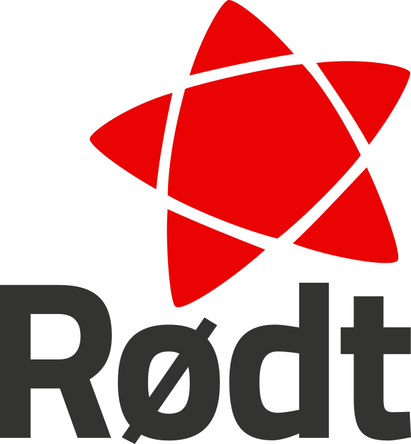
Rødt
Sosialistisk parti som vil fjerne forskjeller gjennom høy skatt for de rikeste, gratis barnehage og kollektivtransport. Mot oljeleting, EU/EØS og NATO.
Nils sin samfunnsbok
Kap. 1–4
Har du noen gang opplevd et overfylt morgentog, en buss som aldri kom, eller hørt diskusjoner om manglende sykehjemsplasser og nedlagte fritidsklubber? Ethvert samfunn står overfor utfordringer som ikke kan løses samtidig. Spørsmålet om hva vi skal prioritere først, og hvem som skal betale regningen, er selve kjernen i politikken.
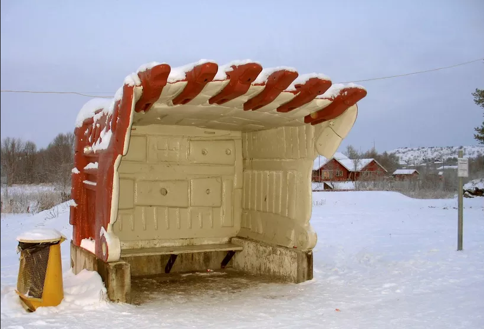
Etter å ha arbeidet med dette kapittelet skal du kunne:
Tenk deg en elev som faller på perrongen fordi morgentoget er stappfullt. Hva er den riktige løsningen? Skal den reisende bare ta et tidligere tog og miste søvn? Skal billettprisene økes for å finansiere flere avganger – med fare for at færre tar toget? Eller bør staten bevilge mer penger gjennom høyere skatter eller økte bompenger for bilister?
Ulike grupper i samfunnet har ulike interesser. Derfor blir prioritering av fellesskapets midler alltid et politisk spørsmål.
Når mennesker er uenige om hvilke problemer som bør løses først og hvordan de skal løses, handler det om hvem som får viljen sin. Makt kan defineres som evnen til å få gjennomslag for sin vilje, selv når man møter motstand. Politikk dreier seg om hvem som har makt i samfunnet, og hvordan denne makten brukes til å fordele goder og byrder.
Alt vi ønsker oss og verdsetter – som trygg og næringsrik mat, god skolegang, rask helsehjelp, ferie, ren luft og et velfungerende kollektivtilbud.
Alt vi helst vil slippe – som lange arbeidsdager, helsekøer, forurenset miljø, høye skatter eller tungt og ensformig arbeid.
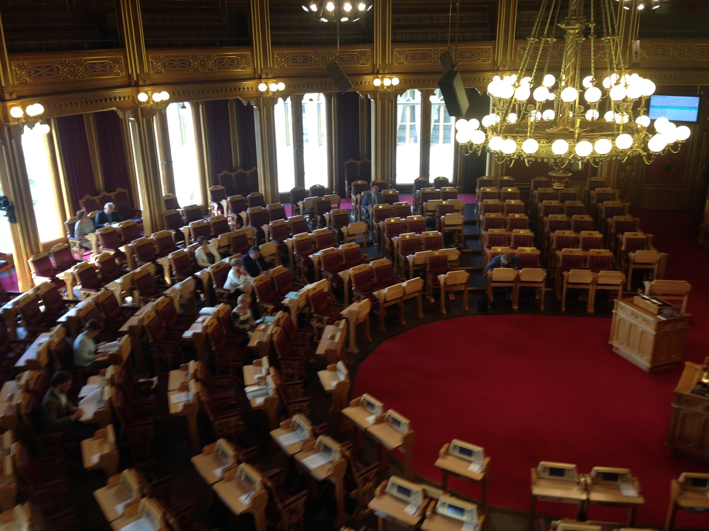
Enkeltpersoner har sjelden nok makt alene til å endre samfunnet, men ved å gå sammen i politiske partier eller ungdomspartier kan man samarbeide om felles hjertesaker. Partienes mål er å få flest mulig representanter inn i de styrende organene – som Stortinget, regjeringen, fylkesting og kommunestyrer.
Selv om Norge har mange partier, følger uenighetene deres ofte bestemte mønstre. Slike varige skillelinjer i politikken kaller vi politiske konfliktlinjer.
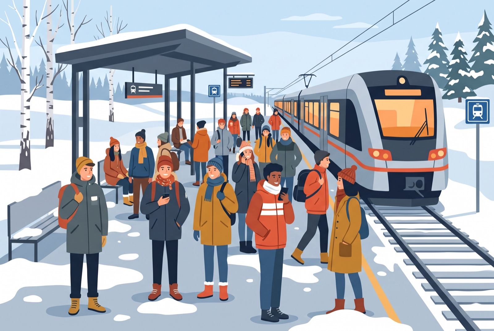
I en ren markedsøkonomi styres produksjon og priser av tilbud, etterspørsel og konkurranse mellom private aktører. Hvor mye du får, avhenger av betalingsevnen din. I Norge har vi derimot en blandingsøkonomi: både private bedrifter og det offentlige (stat, fylkeskommune og kommune) produserer varer og tjenester.
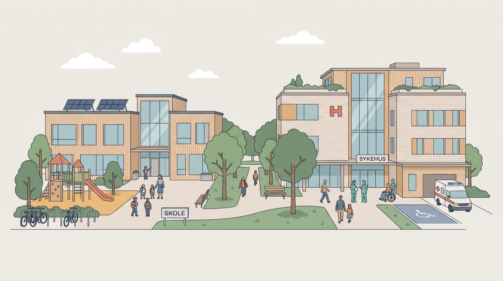
Gjennom skatter, avgifter og inntekter fra offentlig eierskap (som Equinor, Statkraft eller kommunale kraftverk) finansieres den norske velferdsstaten. Den gir innbyggerne gratis eller subsidierte tjenester samt økonomisk støtte i ulike livsfaser.
| Gratis tjenester Helt betalt av det offentlige | Subsidierte tjenester Delvis betalt av det offentlige | Pengestøtte Direkte støtte til enkeltpersoner |
|---|---|---|
| Sykehusbehandling og psykiatrisk hjelp | Alders- og sykehjem | Alders- og uførepensjon |
| Lege for barn under 16 år og tannlege under 18 år | Fastlege, psykolog og fysioterapeut (egenandel) | Sykepenger og betalt foreldrepermisjon |
| 10-årig grunnskole, videregående og offentlige høyskoler | Barnehage og hjemmehjelpstjenester | Dagpenger, sosialhjelp og barnetrygd |
| Biblioteker, parker, lekeplasser og veier uten bom | Kollektivtransport, svømmehaller og kulturtilbud | Studiestipend, studielån og landbruksstøtte |
En av de viktigste konfliktlinjene handler om hvor stor velferdsstaten skal være, og hvor mye skatt vi skal betale. Siden den franske revolusjonen har de som ønsker større økonomisk likhet og omfordeling blitt kalt venstresiden (røde), mens de som mener noe ulikhet er nødvendig for verdiskaping og frihet, kalles høyresiden (blå/borgerlige).
Den tradisjonelle høyre–venstre-skalaen
Ønsker å utjevne forskjeller gjennom progressive skatter (de som tjener mest betaler høyere prosent) og en sterk velferdsstat. Mørkerøde ønsker å erstatte kapitalismen med sosialisme, mens lyserøde sosialdemokrater støtter blandingsøkonomi.
Forsvarer privat eiendomsrett og ønsker lavere skatter for å stimulere verdiskaping. Lyseblå vil stort sett bevare dagens velferdsstat, men prioritere skattelette fremfor nye ordninger, mens mørkeblå er villige til å kutte i velferdsgoder for å få kraftige skattekutt.
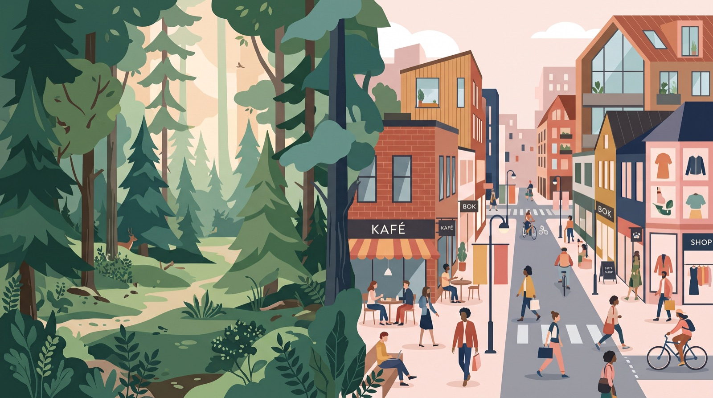
Høyere produktivitet og økonomisk vekst har gitt oss høy levestandard. Samtidig lever vi i et forbrukersamfunn preget av reklame, kjøpepress og jakt på sosial status. Dette reiser to viktige spørsmål: Gir stadig flere ting høyere livskvalitet? Og tåler kloden forbruket vårt?
Dersom vi tar ut mer ressurser eller slipper ut mer enn naturen klarer å håndtere, bryter vi naturens tålegrense. Målet om bærekraftig utvikling handler om å dekke dagens behov uten å ødelegge mulighetene for fremtidige generasjoner.
Her går en annen viktig konfliktlinje på tvers av høyre og venstre. Grønne partier mener rike land må bremse forbruksveksten, satse på kollektivtransport og begrense bilbruk og oljeutvinning. Vekstpartier advarer mot at redusert produksjon gir økt arbeidsledighet, og mener økonomisk vekst trengs for å finansiere velferd og ny teknologi. Samtidig skiller blågrønne (markedsløsninger og grønne skatter) lag fra rødgrønne (direkte politisk styring og omfordeling).
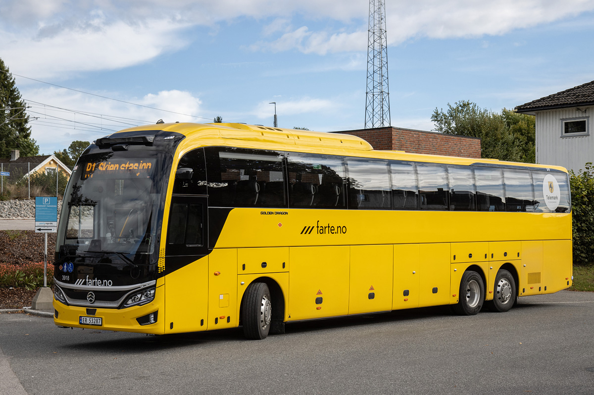
I Grenland (Skien, Porsgrunn og Siljan) er Bypakke Grenland et godt eksempel på denne konfliktlinjen i praksis. Gjennom bompenger og statlige midler finansieres bedre busstilbud, gang- og sykkelveier samt nye veiprosjekter. Mens grønne partier ønsker å bruke bompenger for å dempe biltrafikken og styrke kollektivtilbudet, er flere vekst- og bilistvennlige partier kritiske til høye bompengeutgifter for pendlere i Telemark.
Ved å kombinere den rød-blå aksen med den grønne aksen får vi et todimensjonalt bilde av norsk politikk. Nedenfor ser du hovedtrekkene ved de ni største partiene på Stortinget og deres viktigste hjertesaker.

Sosialistisk parti som vil fjerne forskjeller gjennom høy skatt for de rikeste, gratis barnehage og kollektivtransport. Mot oljeleting, EU/EØS og NATO.
Arbeider for en større velferdsstat betalt av økte skatter for høye inntekter, raskere utfasing av olje og prioritering av kollektiv, sykkel og gange. Mot NATO, EU og EØS.
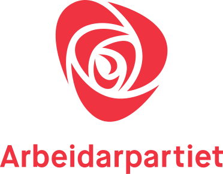
Grunnlagt for å sikre arbeideres rettigheter. Står nærmere sentrum enn SV og Rødt. Vil bevare og utvikle velferdsstaten gjennom blandingsøkonomi og høy sysselsetting.
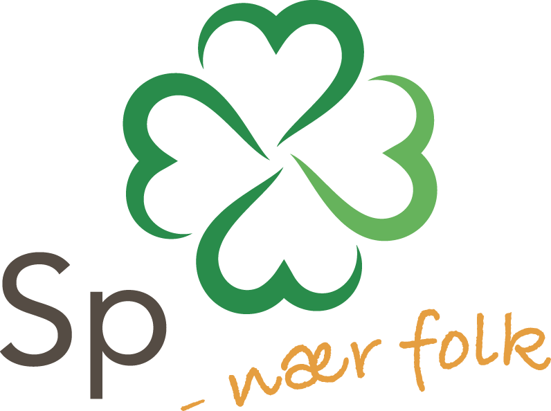
Motstander av sentralisering og EØS-avtalen. Kjemper for Distrikts-Norge, lokale sykehus og polititjenester, samt vern om norsk landbruk og nasjonal selvråderett.
Setter klima og naturvern over alt annet. Vil avvikle olje- og gassvirksomheten raskt, senke forbruket og bruke grønne avgifter kombinert med skatteletter for lavtlønte.
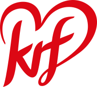
Borgerlig sentrumsparti som vil bevare kristne og tradisjonelle verdier i samfunnet, motvirke sekularisering, styrke familien og stramme inn abortloven.
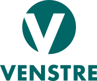
Norges eldste parti (1884). Liberalt parti som forsvarer individuell frihet og privat næringsliv, kombinert med grønne avgifter for å kutte klimautslipp og lette skatter for småbedrifter.
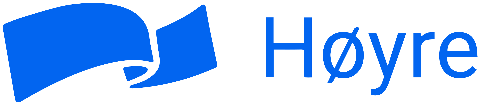
Stiftet i 1884. Ønsker gradvise reformer fremfor raske omveltninger, lavere skatt på inntekt, formue og eiendom, samt større valgfrihet og effektivisering av offentlig sektor.
Kjemper for kraftige kutt i skatter, avgifter og offentlige inngrep. Vil satse videre på olje og veibygging, bruke mer oljepenger og føre en streng innvandringspolitikk.
Politisk uenighet handler ikke bare om interesser, men også om hva partiene tror vil fungere best i praksis. En ideologi er et sammenhengende sett av oppfatninger om hvordan samfunnet fungerer, og hvilke verdier som er rette og viktige.
Både høyre- og venstresiden ønsker mest mulig velferd for pengene og minst mulig unødvendig administrasjon (byråkrati). Likevel er de uenige om konkurranseutsetting – å legge offentlige oppgaver ut på anbud til private aktører:
Borgerlig syn
Konkurranse mellom private selskaper skaper innovasjon, høyere effektivitet og lavere kostnader, slik at innbyggerne får bedre tjenester.
Sosialistisk syn
Anbud krever dobbelt byråkrati til kontroll og oppfølging. Dersom private sparer penger, skjer det ofte på bekostning av kvalitet eller ansattes lønn og arbeidsvilkår.
Fordi partier tolker virkeligheten gjennom sin egen ideologi, må vi søke objektive kilder som beskriver forholdene uavhengig av politisk ståsted. Forskere bruker gjerne to hovedmetoder:
Undersøker ett eller få tilfeller i dybden (f.eks. gjennom intervjuer eller observasjon) for å forstå årsaker og detaljer, men kan ikke si noe sikkert om hele landet.
Samler tall og statistikk fra et stort antall tilfeller for å kunne trekke generelle konklusjoner og sammenligne grupper.
Merk at også forskningsresultater kan påvirkes av hvem som har bestilt undersøkelsen, og hvilke premisser eller kostnader som er tatt med i regnestykket.
I debatter om for eksempel menneskeskapte klimaendringer kan man møte motstridende påstander. Du har rett til dine egne meninger, men ikke til dine egne fakta. Still alltid disse fire kontrollspørsmålene:
Søk opp ulike nettartikler om et omstridt tema (for eksempel klimaendringer eller konkurranseutsetting). Vurder kildene med de fire kildekritiske spørsmålene, og undersøk hvordan ulike partier bruker sosiale medier og retoriske appellformer for å fremme sitt budskap.
Ordet demokrati kommer fra gresk demos (folk) og kratos (styre), og betyr folkestyre. Idéen bygger på at alle mennesker har lik verdi, slik FNs verdenserklæring om menneskerettigheter slår fast i artikkel 1: alle mennesker er født frie og med samme menneskeverd og rettigheter. Vi møter også demokratiske prinsipper i hverdagen – på skolen, i idrettslag, i arbeidslivet og i organisasjoner.
De fleste land i verden kaller seg demokratiske, men mange fungerer dårlig i praksis. Land som holder valg for å virke demokratiske, men der det foregår utstrakt valgfusk, mangler politiske rettigheter, eller der andre enn de folkevalgte egentlig har makten, kalles ofte skinndemokrati.
Politiske spørsmål avgjøres direkte av folket gjennom folkeavstemninger. Ingen land er rene direkte demokratier i dag, men bruken varierer. I Norge ble det sist holdt nasjonal folkeavstemning i 1994, da flertallet stemte nei til EU-medlemskap.
Folket velger representanter til folkevalgte organer som Stortinget, fylkesting og kommunestyrer, som styrer på vegne av velgerne. Alle moderne demokratier er hovedsakelig organisert slik.
At det holdes valg med stemmerett for voksne er ikke nok alene. For at et land skal kunne kalles et ekte demokrati, må tre grunnleggende prinsipper være på plass: like demokratiske rettigheter, like demokratiske muligheter og vern om enkeltmenneskets og minoriteters interesser.
I Norge har alle statsborgere over 18 år stemmerett ved stortingsvalg. Historisk har kvinner, fattige og minoriteter vært utestengt. For at stemmeretten skal ha verdi, må valgene være frie og rettferdige uten valgfusk, og de folkevalgte må sitte med den reelle makten.
Demokratisk påvirkning skjer også mellom valgene – uansett alder. Alle har rett til å skrive leserinnlegg, demonstrere, starte underskriftskampanjer eller organisere seg i partier og fagforeninger.
Et godt demokrati trenger både høy deltakelse og klare grenser for de folkevalgtes makt. Flere mekanismer bidrar til dette:
Flertallsstyre alene gir ikke et fullverdig demokrati hvis flertallet kan undertrykke enkeltpersoner eller minoriteter. Historien – som da Adolf Hitler ble demokratisk valgt i Tyskland i 1933 og straks startet forfølgelser av jøder og andre grupper – viser hvor farlig et ubegrenset flertall kan være. Derfor trengs både rettssikkerhet og minoritetsvern.
Urfolk er folkegrupper som har bodd i et område før staten og landegrensene ble etablert, og har særskilt beskyttelse for språk og kultur. I Norge er samene vårt urfolk.
Norge har også fem nasjonale minoriteter med langvarig tilknytning til landet: kvener/norskfinner, skogfinner, jøder, romer og romanifolk/tatere. Norske lover forbyr dessuten diskriminering basert på religion, etnisitet, kjønn, seksuell orientering, kjønnsidentitet og funksjonsnedsettelser.
Tilpasset fra NDLA: Hva er demokrati? (Eivind Sehested Zakariassen, CC BY-SA).
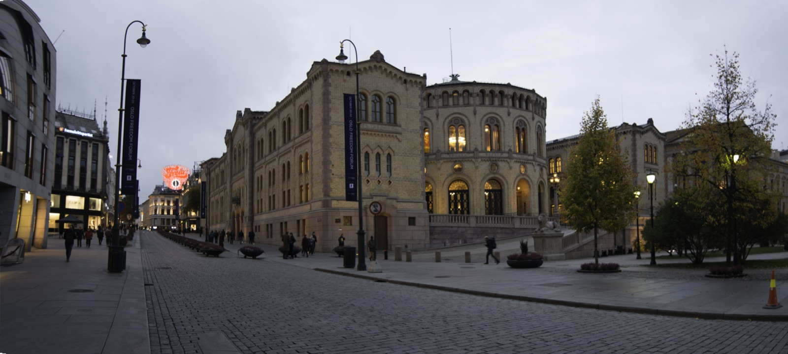
Prinsippet om maktfordeling ble lansert av den franske statsrettsfilosofen Montesquieu i 1748. Hans utgangspunkt var at den som har makt lett kan bli fristet til å misbruke den, og at «makt må stanse makt». Dersom de samme menneskene som lager lovene, også hadde ansvar for å styre etter dem og dømme etter dem, ville altfor mye makt ligge hos noen få personer. Derfor bygget Grunnloven av 1814 på maktfordelingsprinsippet, der statens makt deles mellom tre grener:
De 169 representantene vedtar lover, fastsetter statsbudsjettet og kontrollerer regjeringen.
Leder landet i det daglige, foreslår som oftest nye lover eller lovendringer, og setter Stortingets vedtak ut i livet.
Dømmer i rettssaker etter loven og vurderer om lover er i strid med Grunnloven.
Ordet parlamentarisme kommer av parlament (nasjonalforsamling). Da systemet ble innført med Johan Sverdrups regjering i 1884, ble den utøvende makten (regjeringen) gjort direkte avhengig av tillit fra den lovgivende makten (Stortinget). Ingen kan sitte i både regjering og Storting samtidig: dersom en stortingsrepresentant blir statsråd, trer en vararepresentant fra samme parti og valgdistrikt inn i salen. Vi har fortsatt et system der makt balanserer makt, og den dømmende makten kan for eksempel stille regjeringsmedlemmer for riksrett dersom loven brytes.
Når ett eller flere partier i regjering har mer enn halvparten av stortingsrepresentantene (minst 85 av 169) bak seg, kaller vi det en flertallsregjering. Når regjeringspartiet eller -partiene derimot har færre enn 85 mandater, har vi en mindretallsregjering.
Dersom Stortinget mister tilliten til regjeringen – for eksempel fordi den har holdt tilbake informasjon – kan et flertall vedta et mistillitsforslag, og regjeringen må gå av. Sist dette skjedde var mot Einar Gerhardsens regjering i 1963 etter Kings Bay-ulykken (76 mot 74 stemmer), men bare trusselen om mistillit fungerer som et sterkt pressmiddel.
Regjeringens sterkeste pressmiddel er kabinettsspørsmål: å true med å gå av dersom den ikke får flertall i en bestemt sak (som Bondevik-regjeringen gjorde om gasskraft i år 2000). Til forskjell fra mange andre land tillater ikke den norske Grunnloven å oppløse Stortinget og skrive ut nyvalg mellom ordinære valg – en ny regjering må derfor dannes av det sittende Stortinget.
Kilde: NDLA – Parlamentarisme.
Mediene vokste frem som en viktig samfunnsaktør etter Montesquieus tid. Selv om mediene drives uavhengig av staten og ikke er en formell statsmakt, har de stor innflytelse i offentligheten. Medienes selvpålagte rolle som kritisk vaktbikkje som avslører maktmisbruk, gjør at de ofte kalles «den fjerde statsmakt».
Kilde: NDLA – Maktfordeling.
Hvorfor er det så viktig at domstolene (den dømmende makten) er helt uavhengige av Stortinget (den lovgivende makten)? Flere norske saker viser hvordan maktfordelingen og «den fjerde statsmakt» fungerer når folkevalgte lovgivere selv bryter loven:
I 2018 avslørte avisen Aftenposten at stortingsrepresentanten hadde levert 73 fiktive reiseregninger til Stortinget for rundt 450 000 kroner. Stortinget anmeldte saken, og i oktober 2020 skjerpet Høyesterett straffen til 8 måneders ubetinget fengsel for grovt bedrageri.
Etter nye presseavsløringer i 2019 om falske reiseregninger for private reiser og hytteopphold ble den tidligere stortingsrepresentanten tiltalt for grovt bedrageri. I januar 2022 ble hun dømt i Oslo tingrett til 7 måneders fengsel og tilbakebetaling.
Sakene viser samspillet i norsk demokrati: frie medier avslørte forholdene, Stortinget anmeldte egne representanter og strammet inn kontrollrutinene, og uavhengige domstoler slo fast at også lovgivere straffes etter de samme lovene som alle andre.
Etter et stortingsvalg er det formelt Kongen som peker ut hvem som skal danne regjering. Regjeringen ledes av statsministeren, som velger ut medlemmene av regjeringen – kalt statsråder eller ministre. Hver statsråd leder sitt eget fagdepartement (for eksempel Utenriksdepartementet eller Kunnskapsdepartementet).
Regjeringen styrer landet i det daglige, setter Stortingets lover ut i livet og foreslår statsbudsjettet for det kommende året. Hver fredag kl. 10.00 møtes regjeringen hos Kongen i statsråd for å signere lover og formelle vedtak. Regjeringen sitter vanligvis én valgperiode (fire år), med mindre Stortinget vedtar mistillit mot den.
Partiet eller partiene i regjering har mer enn halvparten av stortingsrepresentantene (minst 85 av 169) bak seg, slik som den rødgrønne regjeringen (2005–2013) og regjeringen Solberg fra januar 2019 til januar 2020. Da er det enkelt å få flertall for egen politikk.
Regjeringen har færre enn 85 mandater og må søke støtte i Stortinget fra sak til sak. Det gir Stortinget mer makt. Regjeringen Støre (2021–d.d.) startet med Ap og Sp, men etter at Sp trakk seg i januar 2025 og etter valget i 2025, styrer Ap alene i mindretall med støtte fra Rødt, SV, Sp og MDG.
Kun ett parti sitter i regjering – slik Arbeiderpartiet gjorde under Einar Gerhardsen på 1950-tallet, og slik Jonas Gahr Støres Ap-regjering gjør etter at Senterpartiet gikk ut i januar 2025.
Flere partier går sammen i regjering og forhandler frem en felles samarbeidserklæring. Mellom 2001 og januar 2025 hadde Norge utelukkende koalisjonsregjeringer.
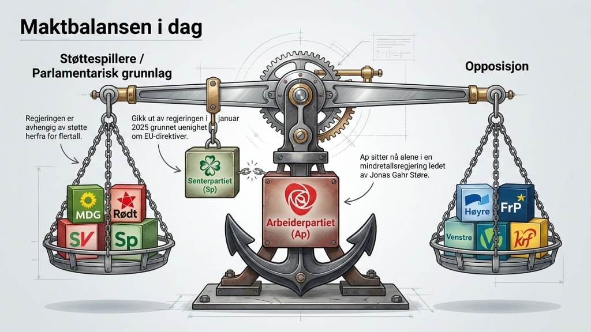
Kilde: NDLA – Regjeringen.
Stortingsvalg holdes hvert fjerde år, og alle norske statsborgere som fyller 18 år i valgåret har stemmerett (enten ved forhåndsstemme eller på valgdagen). Velgeren legger en partiliste i valgurnen, der kandidatene øverst på listen har størst sjanse til å bli valgt inn blant de 169 stortingsrepresentantene.
Norge er delt inn i 19 valgdistrikter (som i hovedsak tilsvarer fylkesinndelingen før regionreformen, selv om Norge har 15 fylker fra 2024). Av mandatene er 150 distriktsmandater og 19 utjevningsmandater. Fordi ordningen skal balansere flere politiske hensyn, veier ikke hver enkelt stemme helt likt matematisk.
Gjennom direkte valg og forholdstallsvalg får partilistene omtrent samme andel distriktsmandater som stemmer. De 19 utjevningsmandatene retter opp skjevheter mellom partiene på landsbasis.
For å hindre at svært mange småpartier gjør det vanskelig å danne regjering, gjelder sperregrensen på 4 %: bare partier med minst 4 % oppslutning nasjonalt får være med i fordelingen av utjevningsmandater.
Gjennom arealfaktoren bestemmes antall mandater per valgdistrikt ikke bare av folketallet, men også av distriktets geografiske størrelse, slik at tynt befolkede områder sikres representasjon.
Tenk over: Hvilke argumenter finnes for og mot arealfaktoren, og burde sperregrensen på 4 % vært høyere, lavere eller fjernet helt?
Prøv selv: På lavinia.no kan du eksperimentere med ulike valgordninger og se hvordan sperregrense og arealfaktor påvirker resultatet.
Vedtar, endrer og opphever lover. De fleste er rammelover (fullmaktslover), der regjeringen får ansvar for å utarbeide nærmere forskrifter.
Vedtar statsbudsjettet hvert år – statens samlede inntekter og utgifter – og fastsetter skatter, avgifter og økonomiske rammer.
Passer på at regjeringen følger opp Stortingets vedtak, blant annet gjennom kontroll- og konstitusjonskomiteen og eksterne organer som Riksrevisjonen.
Når de 169 representantene samles etter valget, velger de en stortingspresident som leder arbeidet og debattene. Representantene fra hvert parti danner en partigruppe ledet av et gruppestyre og en parlamentarisk leder.
Alle representantene sitter i én av Stortingets 12 fagkomiteer, som gjenspeiler partifordelingen i salen. Komiteene forbereder sakene (som regel fremmet av regjeringen) og avgir en innstilling før saken avgjøres i plenum – derfor er komiteene viktige arenaer for påvirkning.
Fordi arbeidet i komiteer og partigrupper skjer bak lukkede dører, er de åpne debattene i stortingssalen viktige for innsyn. Sentrale arenaer er trontaledebatten ved sesjonsstart, finansdebatten om statsbudsjettet og muntlig spørretime der statsrådene svarer direkte på spørsmål.
Regjeringen legger hovedrammene på budsjettkonferansen i mars, finpusser profilen i august/september og legger frem budsjettforslaget for Stortinget i starten av oktober. Senest 15. mai legger regjeringen frem Revidert nasjonalbudsjett med justeringer for inneværende år.
Kilde: NDLA – Stortinget.
Norge styres på tre nivåer: staten (nasjonalt nivå), fylkeskommunene (regionalt nivå) og kommunene (lokalt nivå). Staten består av Stortinget, regjeringen og statsforvaltningen og har det overordnede ansvaret for lover og politikk, men har delegert mange viktige oppgaver til fylkene og kommunene.
Stortinget, regjeringen og statsforvaltningen. Vedtar lover, nasjonale rammer og driver overordnede tjenester.
Har ansvar for oppgaver som går på tvers av kommuner, som videregående skole, fylkesveier og kollektivtransport.
Står nærmest innbyggerne i hverdagen, med ansvar for blant annet barnehage, grunnskole, fastlege og eldreomsorg.
| Område | Kommune Lokalt | Fylke Regionalt | Stat Nasjonalt (eksempler) |
|---|---|---|---|
| Utdanning |
|
|
|
| Helse og sosial |
|
|
|
| Samferdsel og tekniske oppgaver |
|
|
|
| Kultur og fritid |
|
|
|
| Næringsliv og landbruk |
Legger som regel til rette for næringsutvikling lokalt, men har ingen lovpålagte oppgaver. |
|
|
| Andre oppgaver | — | — |
|
Kilde: NDLA – Styringsnivåene.
Alle bor i en kommune og bruker kommunale tjenester hver dag – enten det er grunnskole, fastlege, idrettsanlegg eller sykehjem. Norske kommuner har hatt lokalt selvstyre helt siden formannskapslovene ble vedtatt i 1837, og i nordiske land har kommunene et større ansvar for velferdspolitikken enn i mange andre europeiske land.
Alle norske kommuner (356 etter kommunereformen 2014–2020) er generalistkommuner: de skal tilby de samme tjenestene med samme kvalitet uavhengig av folketall og størrelse. Små kommuner løser ofte krevende oppgaver gjennom interkommunalt samarbeid.
Tanken bak lokaldemokratiet er at de som bor i kommunen kjenner de lokale behovene best. Kommunen har derfor ansvar for lokale tjenester innen utdanning, helse og sosial, tekniske tjenester, samt kultur og fritid.
Kommunene finansierer tjenestene sine gjennom tre hovedtyper inntekter:
Skatteinntekter (person- og eventuell eiendomsskatt) og statlige rammetilskudd som jevner ut forskjeller mellom kommunene. Kommunestyret bestemmer fritt hvordan disse skal brukes (rundt 75–80 % av inntektene).
Betaling fra innbyggerne for spesifikke tjenester som vann, avløp og renovasjon. Avgiftene har ikke lov til å overstige kommunens reelle kostnader.
Statlige penger som er bundet til bestemte formål. Partiene er uenige om hvor mye som bør være øremerkede tilskudd versus frie midler (FrP har særlig etterlyst mer øremerking).
Lokalt eksempel (Skien kommune, 2026): Skien har eiendomsskatt. For 2026 vedtok bystyret 3,9 promille på bolig-, landbruk- og fritidseiendommer (med 70 % reduksjonsfaktor og 650 000 kr i bunnfradrag per boenhet), og 3,2 promille på næringseiendommer og ubebygde tomter.
Hvert fjerde år er det lokalvalg til kommunestyret eller bystyret, som er kommunens øverste politiske organ. Kommunene kan velge mellom to ulike styringsmodeller:
Brukes av de fleste kommuner. Et arbeidsutvalg (formannskapet) på minst fem representanter velges forholdsmessig fra kommunestyret for hele perioden. Ordføreren er øverste politiske leder, mens en ansatt kommunedirektør (rådmann) leder administrasjonen – med et tydelig skille mellom politikk og administrasjon.
Brukes i dag (2024–2026) kun av Norges tre største bykommuner: Oslo, Bergen og Trondheim (Trondheim innførte ordningen i juni 2024; tillatt siden kommuneloven av 1992). Kommunen styres av et byråd ledet av en byrådsleder, som har det samlede ansvaret for administrasjonen og må ha flertallets tillit i bystyret – akkurat som regjeringen og Stortinget. Ordføreren får da en rolle som tilsvarer stortingspresidenten.
Lokalt eksempel (Skien kommune): Skien styres etter formannskapsmodellen. Bystyret har 55 folkevalgte representanter, og i perioden 2023–2027 er Marius Roheim Aarvold (H) ordfører og Jørn Inge Næss (FrP) varaordfører.
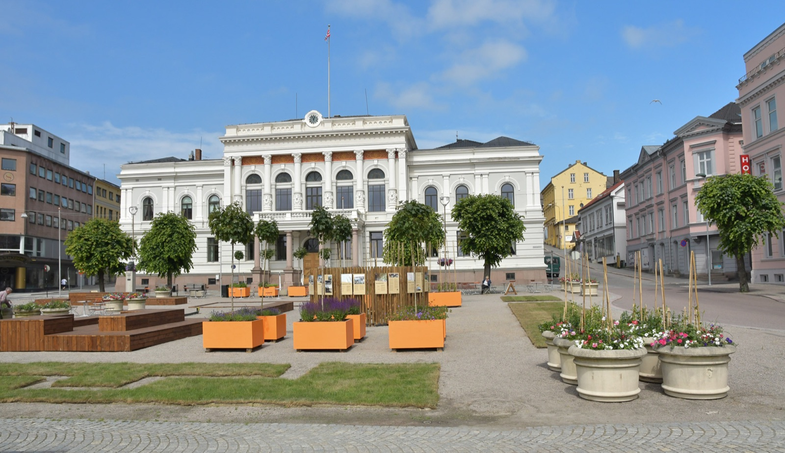
Siden 2006 er 59 grunnskoler lagt ned i Telemark – og Skien er den kommunen i fylket med flest nedleggelser (9 skoler). Mens skolenedleggelser tidligere rammet bygdene hardest, har presset nå flyttet seg til bydelene: i Skien skal Bølehøgda skole legges ned og flyttes til en ny storskole på Buer i 2028, og kommunen vurderer sammenslåing av Stigeråsen og Kollmyr på Gulset (samtidig som Porsgrunn har vedtatt å legge ned Klevstrand og Brattås innen 2029).
En rapport fra Telemarksforsking (april 2026) viser at kommunene ofte overvurderer hvor mye de sparer på å legge ned skoler: driftsutgiftene faller sjelden tydelig på kort sikt, mens kostnadene til nybygg og ombygging øker kraftig. Dessuten kutter kommuner med god økonomi ofte en større andel skoler enn kommuner med dårlig råd.
Skoler er viktige møteplasser for hele nærmiljøet. Forskere peker på et demokratisk problem dersom det ofte er de mest ressurssterke foreldregruppene som klarer å mobilisere og redde sin skole – og at manglende medvirkning skaper langvarige konflikter («lokale slagmarker») og svekket tillit til lokalpolitikerne.
Samtidig peker lokaldebatten i Grenland på et viktig motargument: Godt folkestyre betyr ikke at de som mobiliserer sterkest eller roper høyest i enkeltsaker, alltid skal få viljen sin.
Kilde: NDLA – Kommunene & Telemarksavisa / Telemarksforsking (2026).
Mellom stat og kommune ligger det regionale styringsnivået: fylkeskommunen. Fra 1. januar 2024 har Norge 15 fylker (Oslo er både kommune og fylkeskommune). Ved regionreformen i 2020 ble antall fylker redusert fra 19 til 11 for å gi større kapasitet og flere oppgaver, men etter stor motstand ble tre av de sammenslåtte fylkene delt opp igjen i 2024.
Det øverste folkevalgte organet er fylkestinget, med fylkesordføreren som politisk leder og fylkesutvalget som tilsvarer kommunens formannskap. Enkelte fylkeskommuner bruker en parlamentarisk modell der et fylkesråd fungerer som «regjering» overfor fylkestinget.
Administrasjonen ledes av en fylkesdirektør med fagavdelinger for blant annet videregående opplæring, tannhelse, fylkesveier, kulturminner, samt integrering og sysselsetting av innvandrere.
Hvert fylke har en statsforvalter som representerer staten og kontrollerer at kommunene og fylkeskommunene følger statlige lover og vedtak. Dersom innbyggere mener at kommunen eller fylket bryter statlige regler, kan de klage til statsforvalteren.
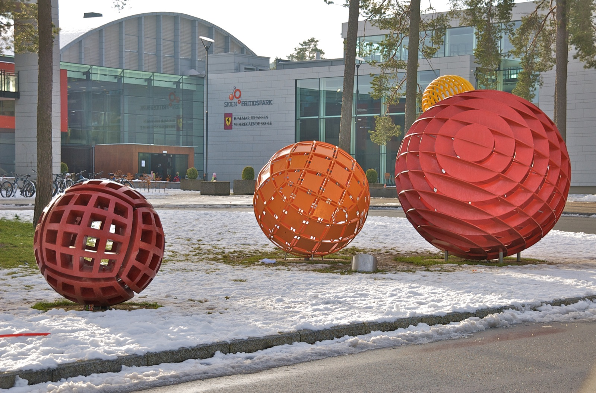
Telemark var ett av fylkene som ble gjenopprettet som eget fylke 1. januar 2024 etter oppløsningen av Vestfold og Telemark. Fylkeshuset ligger i Skien, og fylkesordfører er Terje Riis-Johansen (Sp). Når du går på videregående skole i Skien (for eksempel Hjalmar Johansen videregående skole eller Skien videregående skole), er det Telemark fylkeskommune som eier og driver skolen, sørger for tannhelsetjeneste for unge og samarbeider med Skien kommune og staten om kollektivtransport gjennom Bypakke Grenland. Synkende elevtall gir også utfordringer på fylkesnivå – blant annet gjennom forslag om linjekutt i videregående skole, noe som kan gi lengre reisevei, behov for hybel og økt fare for frafall.
Kilde: NDLA – Fylkeskommunene.
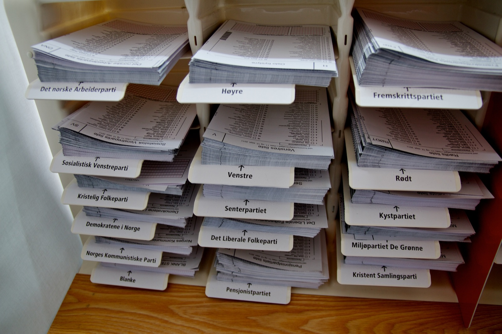
Valg til kommunestyrer og fylkesting holdes samtidig hvert fjerde år, midtveis i stortingsperioden, på en mandag i første halvdel av september fastsatt av Kongen. Hver kommune og hvert fylke utgjør én valgkrets, og antall representanter bestemmes innenfor minstekravene i kommuneloven. I dag (2026) er vi inne i valgperioden 2023–2027, og neste lokalvalg finner sted i september 2027 – for første gang under den nye valgloven som trådte i kraft i 2024.
Alle politiske partier kan stille lister, og tverrpolitiske eller uavhengige grupper kan også stille dersom de samler nok underskrifter (minst 500 ved fylkestingsvalg, eller 2 % av de stemmeberettigede ved kommunestyrevalg).
Ved det siste lokalvalget (2023, gjeldende for perioden 2023–2027) stilte 53 300 kandidater, hvorav 23 260 var kvinner. Blant de største partiene hadde SV høyest kvinneandel (56 %), Rødt, MDG og Ap lå rundt 50 %, og FrP hadde lavest (27 %).
Du må fylle 18 år i valgåret og stå i manntallet i kommunen. I tillegg til norske statsborgere har nordiske statsborgere bosatt i Norge senest 30. juni i valgåret stemmerett, samt øvrige utenlandske statsborgere som har bodd i Norge de siste tre årene.
Velgere kan påvirke personvalget ved å gi personstemmer på listen de velger, og i kommunestyrevalg også ved å føre opp kandidater fra andre lister (slengere).
Valgdeltakelsen ved lokalvalg er tradisjonelt lavere enn ved stortingsvalg. Ved det siste lokalvalget i 2023 stemte 62,2 % av de stemmeberettigede. Deltakelsen var lavere blant velgere med innvandrerbakgrunn enn i befolkningen for øvrig:
Kilde: NDLA – Kommunestyre- og fylkestingsvalg, oppdatert med gjeldende valgperiode (2023–2027) og ny valglov (2024).
Mens Norge er en enhetsstat med parlamentarisme, er USA en forbundsstat bygget på føderalisme og et strengt presidentstyre. Føderalisme betyr at makten er delt mellom den sentrale føderale regjeringen i Washington D.C. og de 50 delstatene, som hver har sine egne lover, guvernører og domstoler.
På nasjonalt nivå styres USA av et system med checks and balances (makt- og ansvarsfordeling). Presidenten (den utøvende makten) velges direkte og uavhengig av Kongressen (den lovgivende makten, som består av Representantenes hus og Senatet), og kan ikke felles av et vanlig mistillitsvotum slik som i Norge.
Et tydelig eksempel på hvordan checks and balances fungerer i USA, kom etter mellomvalget i november 2026. Selv om republikaneren Donald Trump (R) sitter som president, vant Demokratene flertallet i Kongressen – blant annet med 255 mot 167 seter i Representantenes hus.
Når presidenten og Kongressens flertall tilhører ulike partier, kan Kongressen blokkere presidentens lovforslag og budsjetter, mens presidenten kan legge ned veto mot Kongressens vedtak. Uten brede kompromisser stopper politikken lett opp.
I Norges parlamentariske system utgår regjeringen fra Stortinget og er avhengig av å kunne samarbeide med et flertall der. Selv en mindretallsregjering må finne støtte i Stortinget, ellers blir den byttet ut – derfor blir maktforholdet sjelden fastlåst på samme måte som i USA.
Hvordan vet du at du skal ta av deg skoene når du går inn i et norsk hjem, rekke opp hånden i klasserommet eller ikke dele bilder av andre uten lov? Ingen er født med samfunnets spilleregler i lomma. Gjennom hele livet lærer vi normer, verdier og roller – fra familien, skolen, venner og sosiale medier. Dette kapittelet handler om hvordan du blir formet av samfunnet, hvordan kjønnsroller og lovverk endrer seg, og hvorfor vi har lover og straff.
Et samfunn fungerer bare når folk stort sett vet hva de kan forvente av hverandre. Rundt oss finnes det hele tiden et nettverk av verdier (hva vi synes er viktig og riktig), normer (spilleregler for hvordan vi skal oppføre oss), roller (forventninger knyttet til en posisjon) og sanksjoner (reaksjoner når vi følger eller bryter reglene).
Formelle normer er skrevet ned og vedtatt av myndigheter eller organisasjoner. De slår fast konkrete rettigheter, plikter, forbud og påbud:
Uformelle normer står ikke i noen lovbok, men styrer likevel mye av hverdagen vår:
Verdier er grunnleggende oppfatninger av hva som er godt, rettferdig og viktig, og danner basis for handlingene og holdningene våre. Sentrale verdier i Norge er blant annet ytringsfrihet, likestilling, likeverd, retten til liv, rettferdighet og demokrati. I dokumentarserien Fra barn til borger blir dette tydelig når unge elever skal bli enige om felles regler i klasserommet: de må lytte til hverandre og finne kompromisser, akkurat som i et lite demokrati.
Verdier er heller ikke låst for alltid. De siste årene har bærekraft og klimaansvar vokst frem som en sentral verdi – særlig blant unge. Engasjement i klimastreiker, økt gjenbruk og endrede matvaner viser hvordan nye generasjoner er med på å flytte samfunnets verdikompass.
En rolle er summen av forventningene som er knyttet til en bestemt posisjon eller oppgave. Ett og samme menneske har mange roller samtidig – for eksempel elev, venn, søster, deltidsansatt, lagspiller og busspassasjer. I skolen har elev, lærer, rektor og vaktmester ulike faglige og sosiale forventninger. Roller endrer seg også over tid: rollen som influenser eksisterte knapt for 15 år siden, men innebærer i dag tydelige forventninger fra følgere og sponsorer om innhold, åpenhet og reklame.
Når forventningene til én eller flere roller drar deg i motsatte retninger, oppstår en rollekonflikt eller krysspress. Det skjer for eksempel hvis rollen som lojal kompis krever at du holder kjeft om mobbing, mens rollen som medmenneske eller elevrådsrepresentant tilsier at du må si ifra – eller når forventninger fra skolearbeid, familie og jobb kolliderer samme uke.
Sanksjoner er reaksjoner på hvordan vi oppfører oss i forhold til normene. Både ris og ros styrer handlingene våre, skaper sosialt press og påvirker selvfølelsen vår – ofte uten at vi tenker over det.
| Type atferd | Svake (uformelle) reaksjoner | Sterke (formelle) reaksjoner |
|---|---|---|
| Positiv atferd (følger normer) | Smil, anerkjennende nikk, ros fra venner eller lærer | Påskjønnelse, stipend, premie, utmerkelse eller forfremmelse |
| Negativ atferd (normbrudd) | Kjeft, oppgitte blikk, ryktespredning eller sosial utfrysing | Anmerkning, utestenging, oppsigelse, bot eller fengsel |
Sosialisering er prosessen der mennesker lærer og tilpasser seg samfunnets skrevne og uskrevne regler. Det er slik vi utvikler språk, empati, ferdigheter og forståelse for hva som er akseptert oppførsel. Sosialiseringen slutter aldri, men deles gjerne inn i to hovedfaser – pluss en ny, digital kraft som preger dagens ungdom.
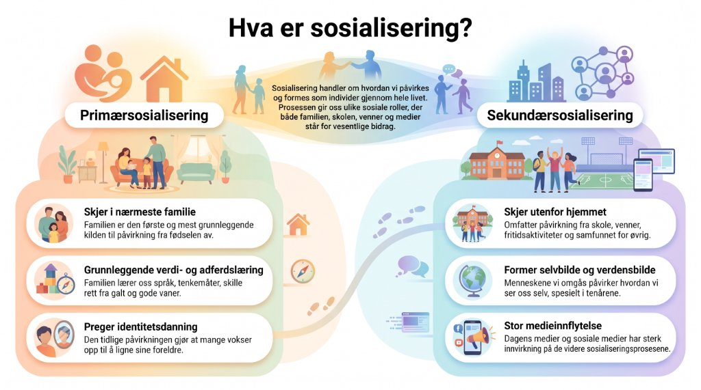
Mens tidligere generasjoner stort sett så de samme nyhetene på NRK, vokser dagens unge opp med algoritmisk sosialisering. Plattformene på TikTok, YouTube og Snapchat analyserer hva du stopper opp ved i et brøkdels sekund, og mater deg mer av det samme. Slik kan algoritmer forsterke både nyttige interesser, politiske meninger, slang og urealistiske skjønnhetsidealer – uten at vi merker hvor mye vi blir påvirket.
Identitet er svaret på hvem du er – både hvordan du ser deg selv, og hvordan andre oppfatter deg. Den formes av summen av alle gruppene du tilhører og rollene du har. Identiteten din er unik for deg, men den preger samtidig hvordan du kler deg, snakker og opptrer i møte med andre.
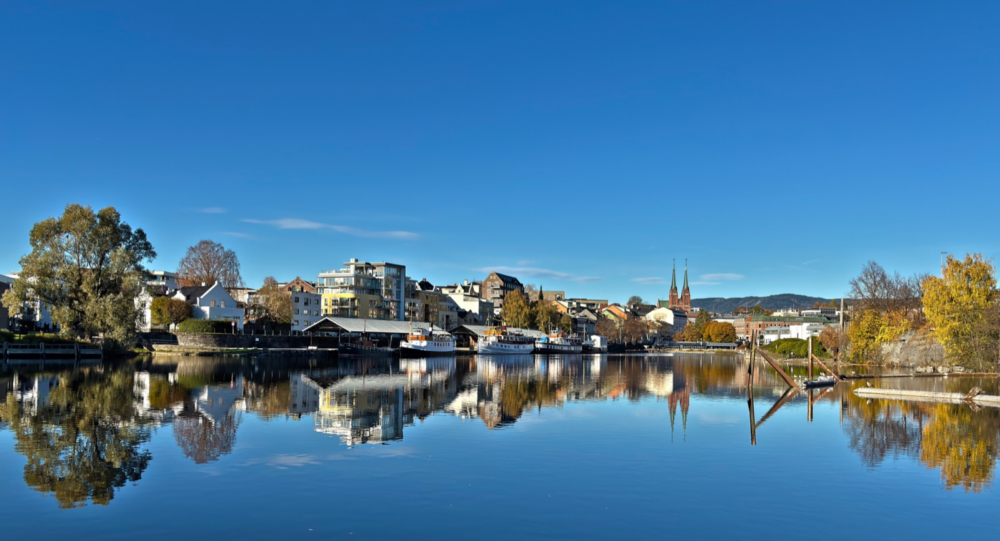
For en ungdom i Skien eller Porsgrunn skjer sekundærsosialiseringen på mange arenaer samtidig: i klasserommet på videregående, på fotballbanen eller i hallen i lokale klubber som Odd eller Urædd, på ungdomshus som Parkbiografen, eller i digitale gruppechatter. Hver arena har sine egne uskrevne regler – og evnen til å veksle mellom dem er en viktig del av det å vokse inn i voksenlivet.
Tidsaktuelt eksempel på algoritmisk sosialisering (2025–2026): Selv om elever på en videregående skole i Telemark sitter i det samme klasserommet, kan de leve i helt ulike digitale strømmer. Hvis du stopper opp ved et par videoer på TikTok eller Reels om trening, proteinpulver og utseende (såkalt «gymtok» og looksmaxxing), eller om politiske stridsspørsmål som strømpriser, skoledebatt og kjønnsroller, fanger algoritmen opp interessen på sekunder. I løpet av få dager fylles «For You»-feeden av stadig spissere budskap, slang og idealer – mens sidemannen i klasserommet får servert en helt annen virkelighet. Dermed blir algoritmene en usynlig medoppdrager som både skaper nye fellesskap og trender lokalt, men også kan forsterke kroppspress og politiske «ekkokamre» blant unge i Norge.
En kjønnsrolle er summen av forventninger, oppfatninger og uskrevne regler knyttet til det å være gutt/mann eller jente/kvinne i et samfunn. Det handler om alt fra klær, kroppsspråk og følelser til arbeidsfordeling i hjemmet og valg av yrke. Fordi kjønnsroller læres tidlig gjennom både primær- og sekundærsosialisering (farger, leker, sangbøker og medier), blir de ofte internalisert – vi opplever dem som «naturlige», selv om de er sosialt skapt og varierer stort over tid og mellom kulturer.
Biologisk kjønn handler om anatomi, kromosomer, hormoner og fysiske kjennetegn. Sosialt kjønn handler derimot om hva kulturen og samfunnet til enhver tid oppfatter som maskulint og feminint. Kjønnsroller henger også sammen med makt: historisk har mannsrollen gitt lettere tilgang til penger, eiendom og lederposisjoner.
I Norge har vi formell likestilling: alle borgere har like juridiske rettigheter, stemmerett og lik tilgang til utdanning gjennom Likestillings- og diskrimineringsloven (som også pålegger arbeidsgivere aktivitets- og redegjørelsesplikt). Likevel mangler det fortsatt på full reell likestilling: vi har et kjønnsdelt arbeidsmarked, lønnsforskjeller, skjev fordeling av toppleder- og eierposisjoner, og mange unge kjenner på sterkt kropps- og skjønnhetspress.
Mange samfunn har vært preget av heteronormativitet – en uskreven «rett linje» som forventer at biologisk kjønn automatisk skal føre til et bestemt kjønnsuttrykk (maskulin mann / feminin kvinne) og tiltrekning til det motsatte kjønn. De som bryter denne linjen, har ofte møtt trange kjønnsroller, mistanke eller hets.
Historien og verden rundt oss viser likevel at kjønnsmangfold ikke er noe nytt: blant urfolk i Nord-Amerika (som hos Cree-folket og i Lakota-kulturen) og i flere asiatiske og buddhistiske tradisjoner har det eksistert anerkjente roller utover to kjønn. Allerede tidlig på 1900-tallet argumenterte den tyske legen Magnus Hirschfeld vitenskapelig for at mennesker består av unike blandinger av egenskaper som ikke passer i én rigid boks, og på 1920-tallet utfordret kunstneren Hannah Gluckstein («Gluck») tidens normer gjennom klær og identitet.
I Norge ble retten til å endre juridisk kjønn kraftig styrket i 2016: kravet om psykiatrisk diagnose og sterilisering/medisinsk behandling ble fjernet, og personer over 18 år fikk selvbestemmelse i folkeregisteret. Samtidig opererer norsk lov fortsatt bare med to juridiske kategorier (mann og kvinne), slik at ikke-binære mangler formell anerkjennelse. Høsten 2021 startet en offentlig utredning om et tredje juridisk kjønn, som i juni 2023 anbefalte å innføre et tredje juridisk kjønnsalternativ i Norge – en beslutning det nå er opp til politikerne å følge opp.
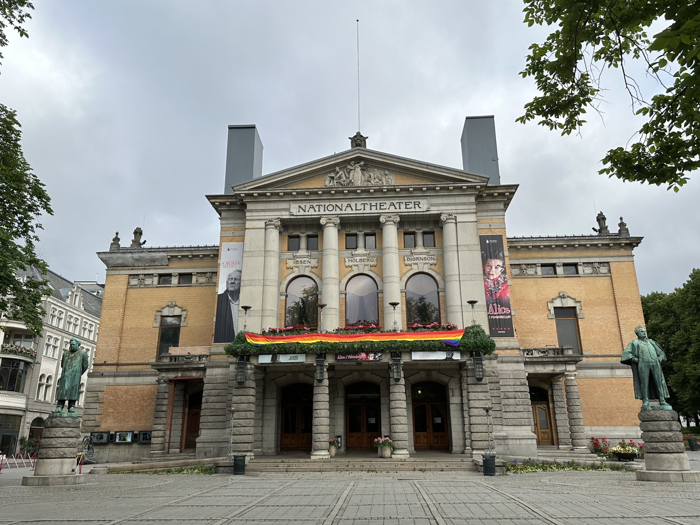
Kriminalitet er å bryte samfunnets formelle normer – altså handlinger som er forbudt i norsk lov. Hva som regnes som kriminelt, varierer både mellom land og over tid. I Norge er den kriminelle lavalderen 15 år: fra dagen du fyller 15 år kan du straffes av politi og domstoler, mens yngre lovbrytere følges opp av foreldre, barnevern og konfliktråd.
Mange tror at en privat chat på Snapchat eller TikTok er utenfor lovens rekkevidde, men straffeloven definerer internett som offentlig rom. Å dele nakenbilder av andre uten samtykke – og spesielt av personer under 18 år – er alvorlig kriminalitet. Samtidig beskytter personvernforordningen GDPR i EU/EØS dataene dine: du har rett til å få vite hvilke personopplysninger selskaper lagrer om deg, og kreve at de slettes.
Norsk lov setter klare grenser for seksuelle krenkelser: voldtekt omfatter all seksuell omgang ved vold, trusler eller når noen ikke er i stand til å samtykke (ikke bare samleie). Det er også ulovlig å utnytte en maktposisjon, drive med blotting (også digitalt), beføling eller vise pornografi til mindreårige. Likevel blir mange overgrep aldri anmeldt på grunn av skam, frykt og krevende bevisførsel.
Straffen skal hindre at lovbryteren begår nye lovbrudd – både ved å være et avskrekkende onde, ved å uskadeliggjøre personen under soning og ved konstruktiv rehabilitering (utdanning, behandling og arbeidstrening).
Straff skal virke på hele befolkningen: både skremme folk fra å bryte loven og ha en holdningsskapende og vanedannende effekt som viser hva samfunnet regner som galt.
Trygghet og rettssikkerhet for innbyggerne krever at farlige lovbrytere holdes unna samfunnet eller fratas muligheten til å gjenta alvorlige handlinger.
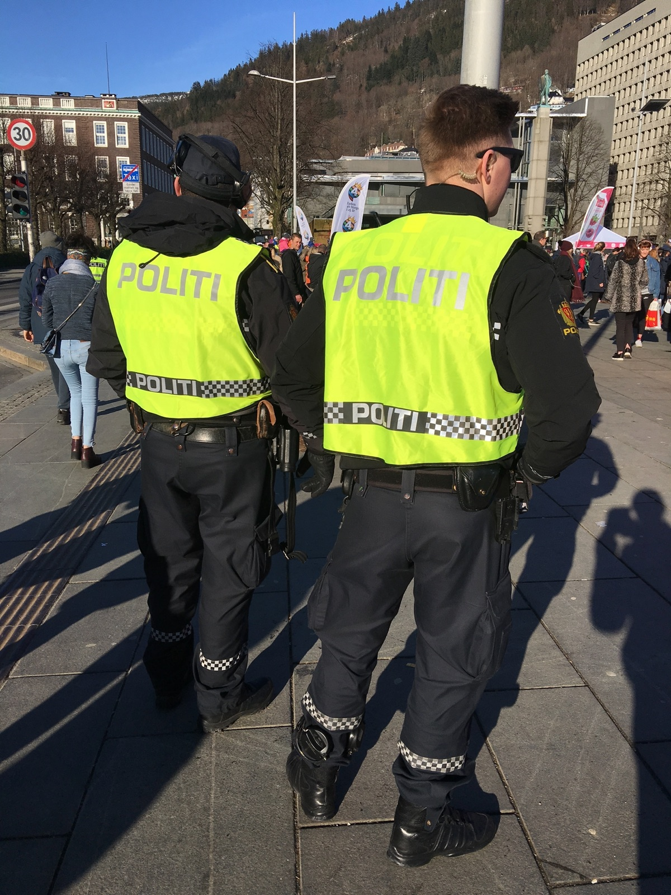
I Skien holder både Telemark tingrett, politiet i Sør-Øst politidistrikt og Skien fengsel til. Samtidig legges det stor vekt på forebygging før unge havner i fengsel: gjennom bekymringssamtaler hos politiet, Konfliktrådet i Telemark (ungdomsoppfølging) og SLT-samarbeid mellom skole, kommune og politi får unge lovbrytere mulighet til å gjøre opp for seg uten å bli stemplet for livet.
Hva er egentlig «typisk norsk»? Brunost, 17. mai og fjellturer – eller likestilling, uformell klesstil og taco på fredager? Kulturer står aldri stille. Gjennom reiser, teknologi, globalisering og innvandring møtes ulike levemåter, noe som skaper både nye fellesskap, spenninger og debatter om identitet, minoriteter og ytringsfrihet.
Ordet kultur dekker alt mennesker har skapt eller forandret – i motsetning til urørt natur. I samfunnsfag skiller vi ofte mellom ytre kjennetegn (språk, klær, mat og hilseskikker – som håndtrykk i Norge kontra et lett bukk i Japan) og indre normer og verdier som overføres fra generasjon til generasjon gjennom sosialisering. Innenfor norsk kultur finnes det også stor variasjon: to venner i samme bygd kan velge helt ulike veier – for eksempel tradisjonell reindrift eller mote og storbyliv – og mange tilhører ulike subkulturer (som gamere, skatere, rånere eller graffitikunstnere).
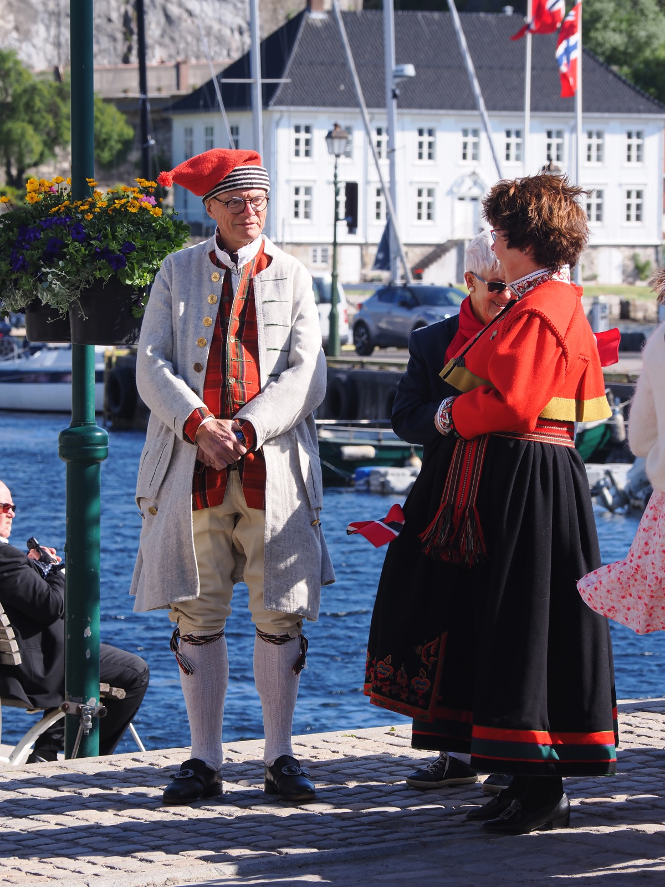
Selv om kristendommen har preget Norge i tusen år, har samfunnet blitt stadig mer sekulært (andelen medlemmer i Den norske kirke har sunket fra 94 % i 1970 til under 65 % i dag). Samtidig kjennetegnes norsk kultur av sterk oppslutning om demokrati, kjønnslikestilling, skeives rettigheter, små økonomiske forskjeller og en uformell tone på jobb og skole.
Fellesskap og trygghet bygges gjennom ritualer og overgangsritualer som markerer nye livsfaser – fra dåp, konfirmasjon, bryllup og gravferd til russetid, 17. mai, samefolkets dag, id al-fitr og jom kippur. Matkultur har ofte røtter i eldre konserveringsmetoder fra tider med knapphet (spekemat, tørrfisk, sylting og samiske retter som gumpus), og hva som regnes som spiselig varierer: marsvin er kjæledyr i Norge og festmat i Ecuador, mens smalahove og brunost kan virke fremmed utenfra. Religiøse leveregler (halal/haram og kosher) samt etiske valg (vegetar, kortreist mat og kamp mot at over 450 000 tonn mat kastes årlig i Norge) gjør mat til et sterkt identitetsuttrykk.
Norsk majoritetskultur er overveiende individualistisk: enkeltpersoners frihet og egne valg i utdanning, yrke og partner står i sentrum. Mange minoritetskulturer er mer kollektivistiske, der hensynet til storfamilie og fellesskap veier tyngre. Dette blir blant annet synlig i synet på eldreomsorg: i Norge oppleves sykehjem ofte som en naturlig løsning fordi voksne barn har egne jobber og liv, mens det i kollektivistiske kulturer kan ses som en selvfølge at familien pleier eldre foreldre hjemme.
Ungdata viser at ungdom over hele landet har mye til felles i skjermtid, fritidsaktiviteter og trivsel. Likevel er det noen forskjeller: i distriktene rapporterer unge litt mindre prestasjonspress, men starter noe tidligere med alkohol og tobakk, mens cannabis er vanligere i byer. Flere jenter enn gutter flytter fra bygda for å ta høyere utdanning i byene, mens flere gutter blir igjen i lokale industri- og fagyrker. Jenter på bygda melder samtidig om noe mer kropps- og konformitetspress i tette miljøer, men unge i distriktene føler også sterk tilhørighet – noe som kom tydelig frem i «bygdeopprøret» og ungdomsdemonstrasjoner mot skolenedleggelser i 2024.
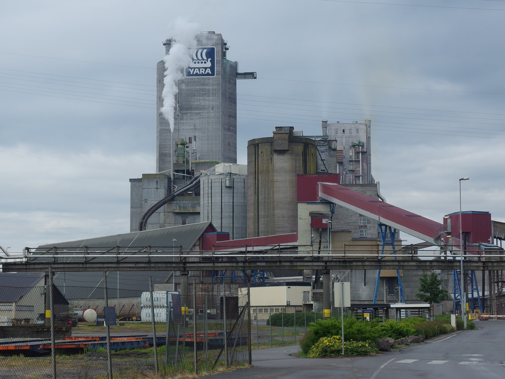
Mange norske tettsteder og byområder er formet rundt industri. I Grenland har Herøya Industripark (med Yara og over 80 bedrifter) i over hundre år skapt stolte fagtradisjoner og yrkesfaglige miljøer – noe som fortsatt påvirker utdanningsvalg og lokal identitet blant ungdom i Skien og Porsgrunn.
I ethvert samfunn finnes en majoritet (flertallet) og ulike minoriteter (mindretall, basert på for eksempel språk, religion eller etnisitet). En person kan tilhøre majoriteten i én sammenheng og en minoritet i en annen – i Kautokeino er for eksempel samisk kultur i flertall lokalt, selv om samene er en minoritet nasjonalt.
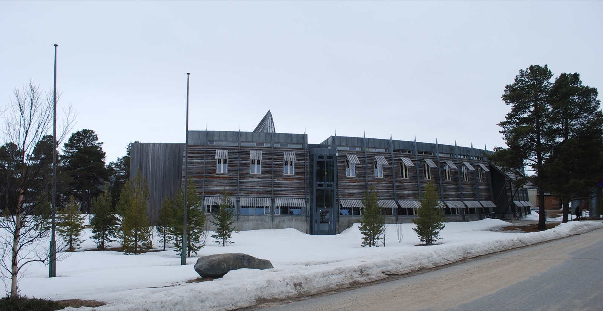
Samene er Nordens urfolk – de har bodd i Sápmi (Norge, Sverige, Finland og Russland) lenge før dagens statsgrenser ble trukket. Mangfoldet innad i Sápmi er stort: mens noen unge satser på reindrift og duodji, bor mange i byer og kombinerer samisk stolthet med moderne yrker, mote og populærkultur.
I Norge snakkes nordsamisk, lulesamisk og sørsamisk (mens pite-, skolte- og umesamisk har svært få eller ingen språkbrukere igjen). Gjennom ILO-konvensjon nr. 169, Finnmarksloven og Sametinget har samene rett til medbestemmelse og til å verne språk og kultur. At samemanntallet har vokst fra 5 500 i 1989 til godt over 23 000 i nyere tid, viser økt stolthet over samisk identitet etter fornorskingstiden.
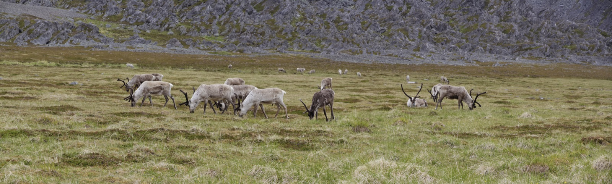
Begrepet etnisk gruppe handler om felles språk, opprinnelse, historie og tradisjoner – uavhengig av statsborgerskap. Samtidig har Norge alltid vært et flerkulturelt land der innvandrere over generasjoner har blitt en del av majoriteten (for eksempel nordmenn med svenske eller danske forfedre).
Fra midten av 1800-tallet til rundt 1960 førte den norske staten en hard fornorskingspolitikk. Målet var assimilering: å gjøre samer og nasjonale minoriteter mest mulig like majoriteten ved å forby morsmål på internatskoler. Dette førte til dårligere skoleutbytte, tapte språk, skam og utenforskap – noe Sannhets- og forsoningskommisjonens rapport (2023) har dokumentert grundig.
Dagens mål er derimot integrering: at minoriteter får kunnskap og mulighet til å delta i samfunnet på like vilkår, uten å måtte gi opp sin egen kultur og identitet.
Å bruke sin egen kultur som «fasit» og måle andre kulturer mot den. Kan skape «oss mot dem»-holdninger og fordommer.
Å prøve å forstå andre kulturer ut fra deres egne premisser. Nyttig for toleranse, men har en klar grense ved brudd på menneskerettigheter (som tvangsekteskap) og norsk lov.
Når majoriteten låner eller tjener penger på minoriteters hellige eller sårbare symboler uten respekt, kontekst eller anerkjennelse av opprinnelsen.
Kulturer har alltid lånt fra hverandre – fra taco og jazz til bunadssølv. Men når en majoritetskultur (som har mest makt) tar elementer fra en minoritetskultur uten respekt, kontekst eller forståelse for betydningen, snakker vi om kulturell appropriasjon. Det oppleves ekstra sårende når majoriteten tjener penger på eller bruker som «kostyme» det samme uttrykket som minoriteten selv tidligere ble diskriminert for.
I samisk kultur er kofta og joik sterke identitetsbærere med klare tradisjoner (kofta viser blant annet hvor du kommer fra). Samiske artister som Ella Marie Hætta Isaksen har kritisert billige, masseproduserte kopier av stjerneluer og kofter i suvenirbutikker – samtidig som hun selv viser at moderne pop og joik kan kombineres når intensjonen er å løfte frem kulturarven med respekt.
Internasjonalt har det vært debatt når kjendiser eller motehus bruker urfolks høvdingfjær som festivalkostyme, religiøse symboler som ren pynt, eller flettestiler som cornrows og box braids som «ny trend» – ofte uten å kreditere opprinnelsen, samtidig som minoritetsungdom selv kan møte fordommer for samme stil på jobb eller skole.
Kulturutveksling vs. appropriasjon: Forskjellen ligger i maktforhold, respekt og kunnskap – spørsmålet er om man løfter frem og krediterer kulturen, eller om man utnytter den kommersielt og river symbolene ut av sin sammenheng.
Rundt én femtedel av Norges befolkning består i dag av innvandrere og norskfødte med innvandrerforeldre. Folk flytter til Norge av ulike grunner: som arbeidsinnvandrere (særlig gjennom EØS), familieinnvandrere eller flyktninger på flukt fra krig og forfølgelse.
Nasjonale SSB-tall (2024–2026) viser at innvandrere fra Polen fortsatt er den største enkeltgruppen i Norge, fulgt av Ukraina, Litauen, Syria, Somalia og Pakistan. Samtidig viser tall fra mars 2026 at innvandringen har bremset noe opp: veksten i arbeidsinnvandring fra Polen er historisk lav, og tilstrømmingen fra Ukraina har flatet ut etter innstramminger i 2024 og 2025.
I Skien er innvandrere fra Polen den største enkeltgruppen, fulgt av veletablerte miljøer fra Somalia, Irak og Syria samt sterk vekst fra Ukraina de siste årene. På fylkesnivå i Telemark utgjør Ukraina og Polen de to største gruppene, og Telemark har en høyere andel innvandrere med fluktbakgrunn (rundt 47 %) enn landssnittet. I flere distriktskommuner i Telemark (som Hjartdal og Midt-Telemark) har bosetting av flyktninger bidratt til å dempe befolkningsnedgangen og holde liv i skoler og lokalt næringsliv.
Mange ungdommer med ikke-vestlig bakgrunn opplever både fordeler og spenninger mellom to kulturer: større individuell frihet i norsk kultur (å velge stil og meninger selv), men også uskrevne regler – som at man gjerne avtaler besøk på forhånd eller sjelden hilser på fremmede på bussen – kontra tettere familiefellesskap og mer sosial kontroll hjemmefra.
Synet på kjærlighet og ekteskap endrer seg raskt: andelen norskpakistanske kvinner som giftet seg med en partner fra foreldrenes hjemland sank fra 74 % i 1996 til 20 % i 2018. Det er også et klart skille mellom frivillig arrangert ekteskap og tvangsekteskap (å tvinge noen med vold eller press), som er strengt straffbart i Norge.
Minoriteter påvirker også majoritetskulturen – fra mat og nye idretter (som landhockey og cricket i lokale idrettslag) til ungdommens alkoholvaner. Tidligere var kristen bedehuskultur på Sør- og Vestlandet den tydeligste alkoholfrie motkulturen i Norge; i dag drikker ungdom i Oslo øst og flere flerkulturelle miljøer minst alkohol, noe som gjør det lettere for alle i vennegjengen å velge alkoholfritt.
Rasisme er forestillinger om at noen mennesker er mer eller mindre verdt på grunn av hudfarge eller etnisk opprinnelse. Rasisme fører ofte til diskriminering – at mennesker fratas like muligheter på grunn av bakgrunnen sin, for eksempel på utesteder, på boligmarkedet eller i arbeidslivet. Forskning har vist at jobbsøkere med utenlandskklingende navn har rundt 25 % lavere sjanse for å bli innkalt til intervju enn søkere med norskklingende navn og identisk CV.
Å generalisere betyr å tro at noe som gjelder én person, gjelder hele gruppen, mens fordommer er forhåndsdommer uten kjennskap til enkeltpersoner. I debatter om kriminalitet brukes ofte begrepet overrepresentasjon (at en gruppe utgjør en større andel enn folketallet skulle tilsi). Samtidig viser nyere gjennomganger (f.eks. av voldtektsdommer i 2018/2019, der 71 % av gjerningspersonene var født i Norge) at når man korrigerer for alder, kjønn, krigstraumer, fattigdom og utenforskap, forklarer levekår langt mer enn «kultur».
Konflikter som Israel–Palestina-konflikten fører av og til til rasistiske generaliseringer der enten alle jøder gjøres ansvarlige for Israels politikk, eller alle muslimer kobles til ekstremisme. Her er det viktig å skille mellom muslimer flest (som støtter et sekulært samfunn der religion er en privatsak) og et lite mindretall islamister (som ønsker at religiøse lover – sharia – skal styre staten).
Når søkere med utenlandske navn sjeldnere kalles inn til jobbintervju enn søkere med norskklingende navn og identisk CV, får flere med minoritetsbakgrunn høyere arbeidsledighet, dårligere økonomi og større behov for sosialhjelp. Å bruke statistikk til å påstå at dette skyldes «kultur», forveksler årsak og virkning. Det samme gjelder kriminalitetsdebatten: selv om enkeltgrupper kan være overrepresentert i utvalgte statistikker (ofte knyttet til alder, kjønn, krigstraumer og utenforskap), har den generelle kriminaliteten i Norge gått ned over tid parallelt med at andelen med innvandrerbakgrunn har økt – noe som viser at levekår og inkludering betyr langt mer enn etnisitet.
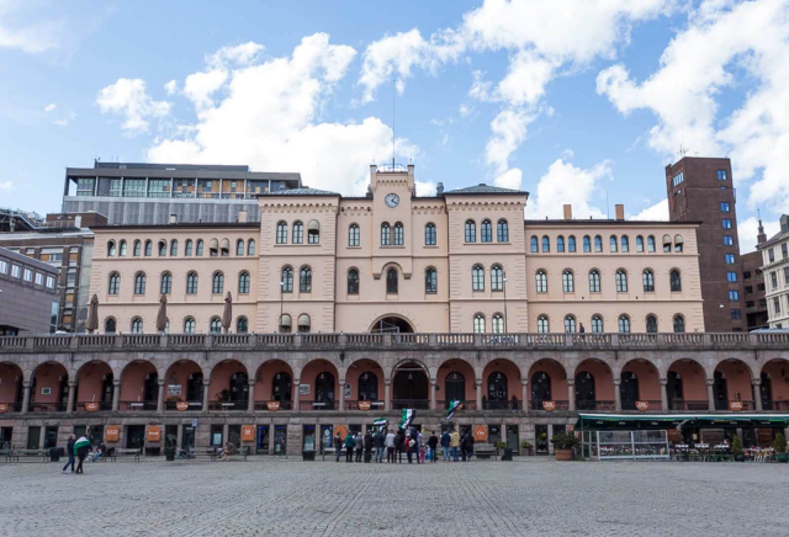
Ytringsfrihet betyr at staten ikke skal sensurere meninger, selv om flertallet misliker dem. Men når kvinner og minoriteter oftere møtes med hets om utseende, bakgrunn eller religion fremfor saklige argumenter, kan det skremme viktige stemmer bort fra samfunnsdebatten. Straffeloven (§ 185) forbyr derfor trusler og hatytringer mot noen på grunn av hudfarge, etnisitet, religion, seksuell orientering eller nedsatt funksjonsevne (inntil tre års fengsel), i tråd med FNs konvensjon om sivile og politiske rettigheter (art. 20.2).
Likestillings- og diskrimineringsloven forbyr usaklig forskjellsbehandling i ansettelser og på arbeidsplassen, og Likestillings- og diskrimineringsombudet gir veiledning. Konkrete tiltak inkluderer raskere godkjenning av utenlandsk utdanning og kompetanse, anonymiserte søknader og moderat positiv særbehandling (kvotering) ved like kvalifikasjoner – i tillegg til at venner, kolleger og medelever sier tydelig ifra mot rasistiske vitser og hets i hverdagen.
Videre i Nils sin samfunnsbok
Kapittel 5: Skape verdier og påfølgende kapitler kobles på via venstremenyen etter hvert som de publiseres.